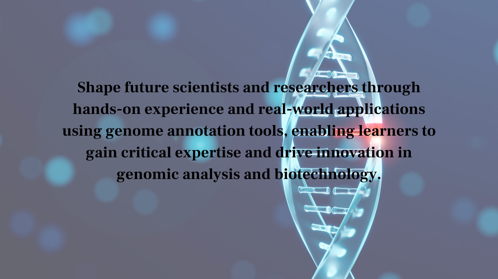

Genome Annotation Tools : 100+ Strategies for Accurate Gene Identification and Analysis
Genome annotation tools are transforming how scientists identify, analyze, and understand genes within complex DNA sequences. Traditionally, genome annotation required extensive manual analysis and experimental validation, which made the process slow and resource-intensive. Today, genome annotation tools use computational methods, machine learning, and large genomic databases to automate gene identification and functional annotation with greater speed and precision. Through genome annotation tools, researchers can uncover gene structures, regulatory elements, and biological functions more efficiently than ever before.
By leveraging genome annotation tools, researchers can improve accuracy, reduce analysis time, and accelerate discoveries in genomics and biotechnology. Genome annotation tools enable high-throughput analysis, support comparative genomics, and enhance understanding of genetic variations. From disease research to evolutionary studies, genome annotation tools are essential for modern bioinformatics and genomic science. As technology advances, genome annotation tools will continue to drive innovation in genetic research and precision medicine.
Genome Annotation Tools
Table of Contents
What Are Genome Annotation Tools?
Genome annotation tools refer to computational systems used to identify gene locations, predict gene functions, and analyze genomic sequences. Genome annotation tools combine sequence alignment, machine learning, and biological databases to interpret raw DNA data. By using genome annotation tools, researchers can assign biological meaning to genetic sequences and improve genomic understanding across multiple organisms. Additionally, genome annotation tools enable more efficient and scalable genomic analysis, supporting faster discoveries in bioinformatics and precision medicine.
- Identify genes using genome annotation tools
- Predict gene function with genome annotation tools
- Analyze DNA sequences using genome annotation tools
- Support genomic research with genome annotation tools
Applications of Genome Annotation Tools
Genome annotation tools are widely used in genomics, biotechnology, and medical research. They help scientists understand gene structures, identify mutations, and support disease research. Genome annotation tools are also essential in evolutionary biology and comparative genomics. Additionally, genome annotation tools enable more accurate and high-throughput analysis of genomic data, improving efficiency in large-scale research projects.
- Gene identification and mapping
- Comparative genomics
- Disease gene analysis
- Functional genomics
Benefits of Genome Annotation Tools
Genome annotation tools offer significant advantages in genomic research. They improve speed, accuracy, and scalability in analyzing genetic data. Genome annotation tools also reduce manual effort and enable large-scale genomic studies with better precision. Furthermore, genome annotation tools enhance data-driven insights, allowing researchers to uncover complex genetic patterns and accelerate scientific discovery.
- Faster genome analysis
- Improved accuracy in gene prediction
- Scalable genomic research
- Enhanced biological insights
Genome Annotation Tools
100+ Strategies for Accurate Gene Identification and Analysis
Genome annotation tools are essential for accurate gene identification and genomic analysis. Below are strategies showing how genome annotation tools enhance research and innovation.
- Improve gene prediction accuracy using genome annotation tools
- Enhance exon-intron structure detection with genome annotation tools
- Optimize sequence alignment processes using genome annotation tools
- Identify coding regions more precisely using genome annotation tools
- Detect non-coding RNA elements using genome annotation tools
- Improve promoter region identification using genome annotation tools
- Enhance splice site prediction using genome annotation tools
- Accurately define gene boundaries using genome annotation tools
- Improve annotation of repetitive DNA using genome annotation tools
- Enable automated gene discovery with genome annotation tools
- Integrate large genomic datasets using genome annotation tools
- Enhance genomic data visualization using genome annotation tools
- Improve sequence comparison accuracy using genome annotation tools
- Support big data genomics analysis using genome annotation tools
- Enable multi-omics data integration using genome annotation tools
- Improve data normalization techniques using genome annotation tools
- Enhance cross-platform genomic analysis using genome annotation tools
- Enable scalable data processing using genome annotation tools
- Improve consistency across annotations using genome annotation tools
- Support transcriptomic data integration using genome annotation tools
- Accelerate genomic research workflows using genome annotation tools
- Support disease gene discovery using genome annotation tools
- Enhance evolutionary biology studies using genome annotation tools
- Improve functional annotation processes using genome annotation tools
- Enable high-throughput genomic analysis using genome annotation tools
- Support biomarker discovery using genome annotation tools
- Improve comparative genomics research using genome annotation tools
- Enable rapid hypothesis testing using genome annotation tools
- Enhance collaboration in genomic research using genome annotation tools
- Support large-scale genome projects using genome annotation tools
- Apply artificial intelligence in genome annotation tools for predictions
- Use machine learning models within genome annotation tools
- Enable real-time genome annotation using advanced genome annotation tools
- Improve automated pipelines using genome annotation tools
- Enhance genomic databases using genome annotation tools
- Leverage deep learning within genome annotation tools for accuracy
- Enable cloud-based genome annotation tools for scalability
- Improve workflow automation using genome annotation tools
- Enhance predictive modeling using genome annotation tools
- Integrate AI-driven insights into genome annotation tools
- Improve disease diagnosis using genome annotation tools
- Enable precision medicine approaches using genome annotation tools
- Support genetic disorder analysis using genome annotation tools
- Improve cancer genomics research using genome annotation tools
- Enhance drug target identification using genome annotation tools
- Enable personalized treatment strategies using genome annotation tools
- Improve clinical genomic workflows using genome annotation tools
- Support rare disease research using genome annotation tools
- Improve pharmacogenomics analysis using genome annotation tools
- Enhance medical data interpretation using genome annotation tools
- Reduce manual annotation errors using genome annotation tools
- Improve annotation speed using genome annotation tools
- Enable automated genome pipelines using genome annotation tools
- Improve workflow efficiency using genome annotation tools
- Enhance reproducibility using genome annotation tools
- Optimize resource utilization using genome annotation tools
- Reduce computational costs using genome annotation tools
- Improve scalability in genomic analysis using genome annotation tools
- Enable continuous data updates using genome annotation tools
- Improve annotation reliability using genome annotation tools
- Enable global genomic data sharing using genome annotation tools
- Enhance collaboration between institutions using genome annotation tools
- Support open-access genomic platforms using genome annotation tools
- Improve international genomic standards using genome annotation tools
- Enable cross-border genomic research using genome annotation tools
- Enhance transparency in genomic research using genome annotation tools
- Support global disease surveillance using genome annotation tools
- Improve data interoperability using genome annotation tools
- Enable collaborative annotation platforms using genome annotation tools
- Enhance accessibility of genomic research using genome annotation tools
- Enable real-time genomic analytics using genome annotation tools
- Improve genome editing research support using genome annotation tools
- Enhance CRISPR-based studies using genome annotation tools
- Support synthetic biology research using genome annotation tools
- Enable predictive genomics using genome annotation tools
- Improve long-read sequencing annotation using genome annotation tools
- Enhance next-generation sequencing analysis using genome annotation tools
- Enable smart genomic ecosystems using genome annotation tools
- Support advanced bioinformatics using genome annotation tools
- Drive innovation in genome science using genome annotation tools
- Improve annotation of complex genomes using genome annotation tools
- Enhance metagenomic analysis using genome annotation tools
- Support microbiome research using genome annotation tools
- Improve plant genomics annotation using genome annotation tools
- Enhance animal genomics research using genome annotation tools
- Enable environmental genomics studies using genome annotation tools
- Improve annotation pipelines for new species using genome annotation tools
- Support biodiversity studies using genome annotation tools
- Enhance genome-wide association studies using genome annotation tools
- Enable future-ready genomic infrastructure using genome annotation tools
- Advance innovation using genome annotation tools
Gene Identification & Prediction
Data Analysis & Integration
Research & Innovation
Advanced Technologies
Healthcare & Medical Applications

Genome Annotation Tools
Automation & Efficiency
Global Research & Collaboration
Future Innovations
Advanced Applications & Expansion
These strategies highlight how genome annotation tools are transforming genomic research and enabling more accurate gene identification and analysis. As genome annotation tools continue to evolve, they will play a crucial role in advancing precision medicine and expanding our understanding of complex biological systems.
Genome Annotation Tools
Future of Genome Annotation Tools
The future of genome annotation tools looks promising with advancements in AI, big data, and automation. Genome annotation tools will become more accurate, scalable, and integrated into genomic research workflows. Additionally, genome annotation tools will enable real-time genomic analysis, allowing researchers to generate faster and more precise insights. As genome annotation tools continue to evolve, they will drive innovation in genomics, biotechnology, and personalized medicine.
As genome annotation tools continue to evolve, they will redefine how scientists analyze genetic information and drive breakthroughs in medicine, biotechnology, and precision genomics. This ongoing advancement of genome annotation tools will enable more accurate and efficient interpretation of complex genomic data. Furthermore, genome annotation tools will support deeper insights into genetic variation, accelerating discoveries in disease research and personalized healthcare.